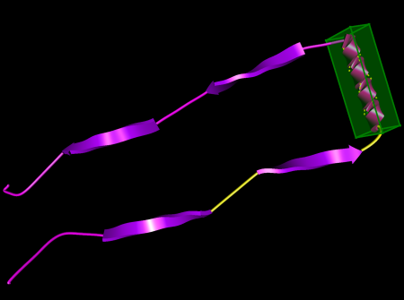
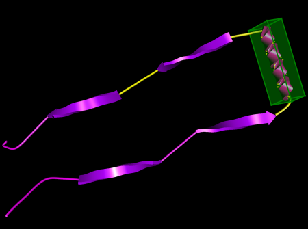
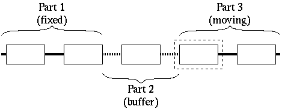
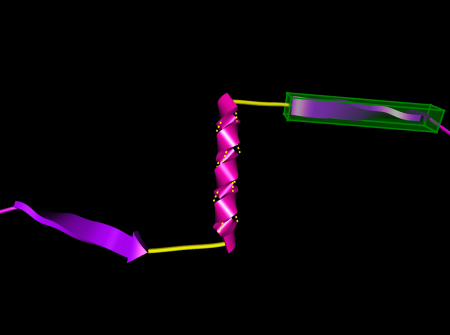
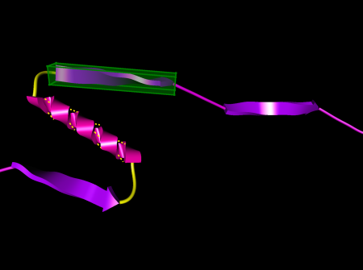
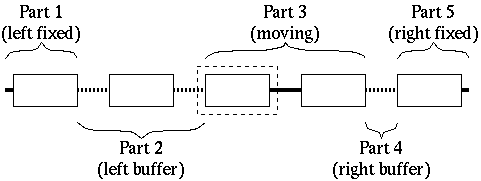
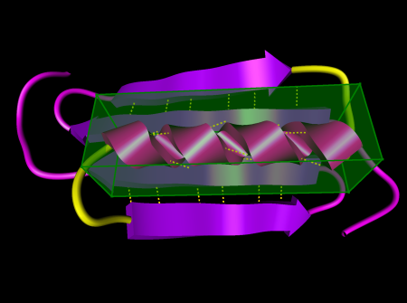
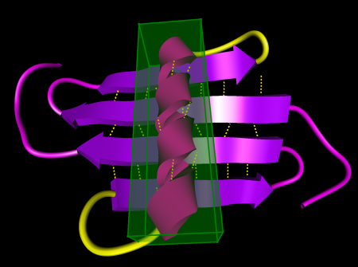

Structure Dragging
The core functionality of ProteinShop is allowing a user to move parts of a protein with respect to each other, without breaking the manipulated protein's primary structure, i.e., without breaking any covalent bonds by violating bond distance/bond angle conditions. The interaction paradigm is that of direct manipulation, where a protein part (a secondary structure) can be translated and rotated by dragging an appropriate 3D interaction widget with the mouse. Such movements of a secondary structure are translated into dihedral angle changes inside user-selected coil regions acting as "movement buffers" between the manipulated and fixed parts of a protein. This translation from 3D motion into bond rotations is performed by an inverse kinematics algorithm. As a result, ProteinShop allows to manipulating proteins almost as if they were "tangible" physical models. This novel approach to protein manipulation results in an intuitive method to align secondary structures inside a protein to form tertiary structure, e.g., aligning beta-strands to form beta-sheets, or clustering alpha-helices.
Direct Manipulation Procedure
Dragging protein parts consists of a sequence of steps. First, a secondary structure has to be selected, see Section 1.3.1. This will create a 3D interaction widget (translucent green box) surrounding the selected structure. Second, a subset of coil regions has to be activated to serve as movement buffers for subsequent interaction with the widget. Finally, the selected secondary structure can be translated and rotated by dragging the interaction widget.
Selecting a Secondary Structure
The secondary structure to be manipulated can be selected as described in Section 1.3.1, by either using the "Structure index" slider in the Structure Dialog, or by holding down the <Ctrl> modifier key and clicking the left mouse button over a structure's visualization in the main display window.
Activating Coil Regions
The inverse kinematics algorithm in ProteinShop will update dihedral angles of residues inside all active coil regions to realize the structure movements requested by dragging the interaction widget. Active coil regions will be highlighted by rendering their structure cartoons in yellow. There are two cases of coil region activation, see Figure 1: in the simpler case, all activated coil regions are on the same side of the selected structure (according to chain order); in the more complex case, there are coil regions on both sides of the selected structure. Either way, the role of active coil regions is to serve as "buffers" for structure dragging. When the selected secondary structure is translated or rotated, ProteinShop's inverse kinematics algorithm will modify all active coil regions to move the selected structure with respect to those parts of the protein that lie "beyond" all selected coil regions.
| (a)  |
| (b)  |
| Figure 1: Two cases of active coil regions. Active coil regions are highlighted by rendering their structure cartoons (or backbone polylines) in yellow. (a) All active coil regions are on one side of the selected structure in chain order. (b) There are active coil regions on both sides of the selected structure. |
When a secondary structure is selected, ProteinShop will automatically activate one "default" coil region. This coil region will be determined by the current update direction. If the update direction is left-to-right, then ProteinShop will activate the closest coil region to the left of the newly selected structure (in chain order); if, on the other hand, the update direction is right-to-left, then ProteinShop will activate the closest coil region to the right of the selected structure. The current update direction can be toggled by pressing the U hotkey. If the U hotkey is pressed while a secondary structure is selected, ProteinShop will deactivate all coil regions and activate only the new default coil region.
Coil regions can be activated/deactivated using the method described in Section 1.3.1: a coil region's activation state can be toggled by holding down the <Shift>+<Ctrl> modifier keys and clicking the left mouse button over a coil region's visualization in the main display window.
Simpler Activation Case
In the simpler case, all activated coil regions are on the same side of the selected structure in chain order, see Figure 1(a). For the sake of simplicity, let us assume that all active coil regions are to the left of the selected structure (the other case is symmetrical). Then, when dragging the interaction widget, the protein will be treated as three parts, see Figures 2 and 3:
- The part to the left of all active coil regions. This part will stay fixed during dragging.
- The part from the first active coil region up to and including the last active coil region. This part of the protein will be modified during dragging: all active coil regions will change shape, and other structure inbetween will undergo rigid body transformations, i.e., will be rotated and/or translated, but will not change shape themselves.
- The part to the right of the last active coil region. This protein part will undergo rigid body transformations as requested by the user. If a requested transformation can not be realized by modifying the active coil regions, the selected structure will approximate the position/orientation of the interaction widget as closely as possible.
|  |
| Figure 2: Diagram of simpler manipulation case where all active coil regions are on the same side of the selected structure. The selected structure is surrounded by a dashed box, and active coil regions are drawn as dotted lines. |
| (a)  |
| (b)  |
| Figure 3: Example manipulation in the simpler case where all active coil regions are on the same side of the selected structure. (a) Before dragging the 3D interaction widget. (b) After dragging the 3D interaction widget. |
More Complex Activation Case
In the more complex case, active coil regions are on both sides of the selected structure in chain order, see Figure 1(b). When dragging the interaction widget, the protein will be treated as five parts, see Figures 4 and 5:
- The part to the left of the first active coil region. This part will stay fixed during dragging.
- The part from the first active coil region up to and including the last active coil region to the left of the selected structure. This part will be modified during dragging as in the simpler case.
- The part between the last active coil region to the left of the selected structure and the first active coil region to the right of the selected structure. This part will undergo rigid body transformations as requested by the user.
- The part from the first active coil region to the right of the selected structure up to and including the last active coil region. This part will be modified during dragging as in the simpler case.
- The part to the right of the last active coil region. This part will stay fixed during dragging.
|  |
| Figure 4: Diagram of more complex manipulation case where active coil regions are on both sides of the selected structure. The selected structure is surrounded by a dashed box, and active coil regions are drawn as dotted lines. Note that, in this example, the selected structure and the one to the right of it move together as a single rigid body, since the coil region between them is not activated. |
| (a)  |
| (b)  |
| Figure 5: Example manipulation in the more complex case where active coil regions are on both sides of the selected structure. (a) Before dragging the 3D interaction widget. (b) After dragging the 3D interaction widget. |
There are two main differences between the simpler and more complex manipulation cases. The more obvious is that the more complex case allows to move a structure without disturbing the alignment between protein parts on both sides, i.e., it allows to move the "middle" of an alignment without destroying the alignment. In the example case shown in Figure 3, it is used to move an alpha-helix that is between the strands of a beta-sheet without destroying the beta-sheet.
The more subtle difference is the behaviour of manipulation in the limit case. As mentioned above, dragging the interaction widget to a position/orientation that can not be reached by modifying the currently active coil regions results in the manipulated protein part approximating the requested position/orientation as closely as possible without moving the fixed part of the protein. In the more complex case, the limit behaviour is opposite. Here, the manipulated protein part will always exactly follow the 3D interaction widget, and if the requested movement can not be realized, the supposedly fixed two protein parts will start moving with respect to each other. This means that a user has to be careful during manipulation not to break an existing alignment when moving a middle structure. Frequent use of the undo/redo functionality is recommended.
Dragging the 3D Interaction Widget
The 3D interaction widget is a means to translate two-dimensional movements of a mouse into three-dimensional translations and rotations of the selected structure surrounded by the widget. The basic paradigm for interaction is, again, direct manipulation. This means that the interaction widget can be clicked (while holding down the <Shift> modifier key) and dragged with the mouse, and dragging motions will be translated into 3D transformations consistently, based on which part of the widget was clicked. The widget supports three modes of interaction:
- Translation along a face
- If the interaction widget is clicked on one of its faces, dragging the mouse will translate the widget inside the plane containing the clicked face. To provide visual feedback, the four edges surrounding the clicked face will be highlighted in yellow as long as the mouse button is held down.
- Rotation around an edge
- If the interaction widget is clicked on one of its edges, dragging the mouse will rotate the widget around an axis parallel to the clicked edge. The axis of rotation is highlighted by highlighting the four edges parallel to the clicked one in yellow. The center of rotation is determined by context, as described below. For maximum effect, the mouse should be dragged in a direction perpendicular to the clicked edge.
- Rotation around a vertex ("virtual trackball")
- If the interaction widget is clicked on one of its vertices, dragging the mouse will rotate the widget around the current center of rotation (determined as described below). When rotating around a vertex, all eight corners of the 3D interaction widget will be highlighted in yellow. This interaction mode uses a virtual trackball to translate dragging motions into rotations, and the effect of mouse movements on the widget's orientation is similar to the effect of mouse movements during viewpoint rotation as described in Section 1.2.2.
Note: Due to a flaw in the current implementation of the inverse kinematics algorithm, it can sometimes happen that too rapid movement (especially too fast rotation) of the 3D interaction widget confuses the algorithm. This will result in the selected structure suddenly taking an orientation that is perpendicular to the desired orientation. If this happens, it is best to undo the most recent interaction and try again.
Determining the Center of Rotation
The center of rotation used when rotating the 3D interaction widget around one of its edges or vertices depends on context. There are two major cases: if an amino acid residue is currently selected, see Section 1.3.1, the center of rotation is set to the midpoint of the selected residue's two hydrogen bond sites. If, on the other hand, no amino acid residue is selected, the center of rotation is determined by the current update direction. If the update direction is left-to-right, the center of rotation is set to the position of the first backbone atom of the selected structure; otherwise, it is set to the position of the last backbone atom of the selected structure.
The main use of setting the center of rotation to a selected residue's hydrogen bond sites midpoint is the ease of fine-tuning hydrogen bonds. Say that two beta-strands are already aligned to form an anti-parallel beta-sheet, and are currently stabilized by one pair of hydrogen bonds between the two strands. Then it becomes much easier to form additional hydrogen bonds by selecting that residue inside the selected structure that is involved in the current hydrogen bond pair. This will set the center of rotation to that residue, and rotations of the 3D interaction widget will much more intuitively correspond to changes in the alignment of the two strands.